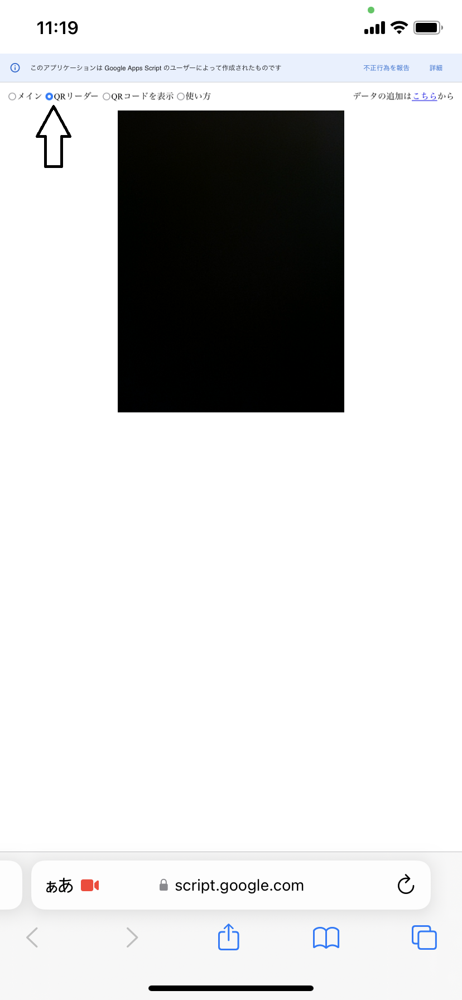

目次へ
QRコードリーダーの使い方
- まずDayly Tryにログインしてください。
そうしないと機能しません。
- このサイトのタブを開きます。
-
左上のモード選択が「QRリーダー」になっていることを確認します。

- カメラをかざして生徒の入退出確認用のQRコードを読み取ります。
-
このようなページに移動します。
-
このような表示がされた場合は生徒のAIタブレットのIDを入力します。
IDが分からない場合は空欄にして、田中に生徒名とその旨をご連絡ください。
-
このような表示がされた場合はDayly Tryにログインしているかどうか確認してください。

Dayly Tryにログインしている場合は入力ミスがあるので、田中に生徒名とその旨をご連絡ください。